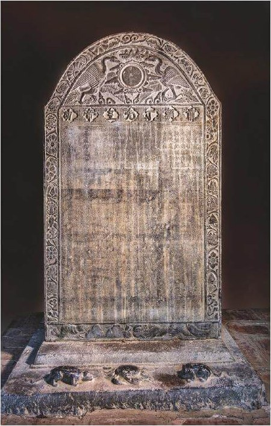
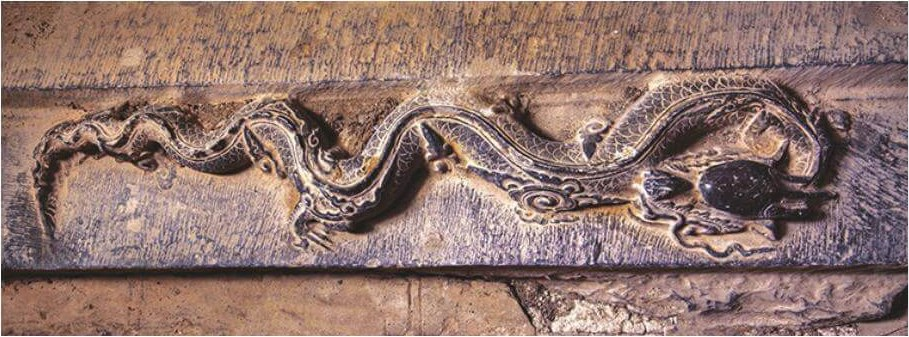

CỐ ĐÔ HOA LƯ
딘 왕 사당의 비각


매우 귀중한 '돌로 된 사료 창고'인 딘 띠엔 황 왕 사당의 비석 시스템입니다.
현재 비각에는 돌에 새겨지고 한자로 쓰인 세 개의 고비(古碑)가 보존되어 있습니다.
이 세 비석은 각기 다른 역사적 시기에 세워졌으며, 고유한 역사적 자취를 담고 있습니다.
첫째, 호앙딘(Hoằng Định) 9년(1608년) 비석: 이 비석은 도원수총국정 상부평안왕(Đô nguyên soái tổng quốc chính, Thượng phụ Bình An vương, 즉 찐뚱(Trịnh Tùng))의 공덕을 기록하고 있습니다. 그는 이전 왕조 성왕의 공덕을 기리며 국가의 번영을 기원하기 위해 제사를 모실 밭 7머우(mẫu)를 정성껏 바쳤습니다. 또한 사당 중수에 기여한 퐁군공(Phong quận công) 부이 터이 쭝(Bùi Thời Trung)과 지역 주민들의 공로도 함께 기록되어 있습니다.
다음으로 찐호아(Chính Hòa) 17년(1696년) 비석: 가장 크고 독특한 예술적 가치를 많이 담고 있는 비석입니다. 특히 이 비석은 제작자의 이름이 완전하게 기록된 유일한 비석입니다. 비문은 한림원 관리인 응우옌(Nguyễn) 성을 가진 진사가 작성하였고, 한자 부분은 낌끄엉(Kim Cương) 사의 주지 스님이 썼으며, 직접 돌을 깎고 새긴 뛰어난 장인은 타인호아(Thanh Hóa)성 동선(Đông Sơn)현 안호악(An Hoạch) 출신의 레 년 푸(Lê Nhân Phú)입니다.
비석의 장식 예술을 살펴보면, 궁중의 장엄함과 민간의 자유분방한 정신이 기적적으로 결합된 모습에 놀라움을 금치 못할 것입니다. 비석 상단에는 '쌍봉조일(두 마리의 봉황이 태양을 향함)' 무늬가 돋보입니다. 그 주위에는 대칭을 이루는 화초 무늬와 똬리를 튼 용이 배치되어 있으며, 원숭이 가족이 다정하게 서로를 업고 있는 따뜻하고 친근한 모습도 어우러져 있습니다.
가장 독특한 것은 비석 받침대의 층진 부분에 매우 생동감 있게 양각된 '쌍서조해(두 마리의 쥐가 게를 향함)' 무늬입니다. 게와 쥐는 본래 들판이나 농민들의 소박한 삶과 밀접한 동물인데, 사당의 비석에 엄숙하게 장식된 것은 고대 조각 예술에서 유례를 찾아볼 수 없는 결합입니다.

전면의 소박하고 서민적인 모습과 대조적으로, 비석 후면에는 왕의 위엄을 상징하는 부드럽게 굽이치는 용의 모습이 새겨져 있습니다. 그러나 용은 위엄 있게 나타나는 대신 비석 뒤에 숨어 있습니다. 조정의 장엄함과 신성함, 그리고 마을 생활의 해학이 절묘하게 어우러진 점이 이 비석의 독보적인 가치를 만들어냅니다.

셋째, 티에우찌(Thiệu Trị) 3년(1843년) 비석: 민망(Minh Mệnh) 18년(1838년)에 사당이 훼손되자 지방 관리인 쩐 반 쭝(Trần Văn Trung)과 부이 꿍 띠엔(Bùi Cung Tiên)이 조정에 보고하여 왕으로부터 은전 500관을 하사받아 보수한 사건을 기록하고 있습니다. 그 은혜를 기리기 위해 티에우찌 3년에 이 돌비석을 세워 영원히 전하게 하였습니다.
딘 띠엔 황 왕 사당의 비석 시스템은 과거로부터 온 '편지'로, 선조들의 열정과 도리를 온전히 간직하고 있다고 단언할 수 있습니다. 오랜 세월의 풍파 속에서도 이 돌로 된 보물들은 묵묵히 민족의 자긍심을 키우고 있으며, 우리 각자에게 문헌의 뿌리를 상기시키고 국가 독립의 신성한 가치를 더욱 소중히 여기도록 일깨워주고 있습니다.